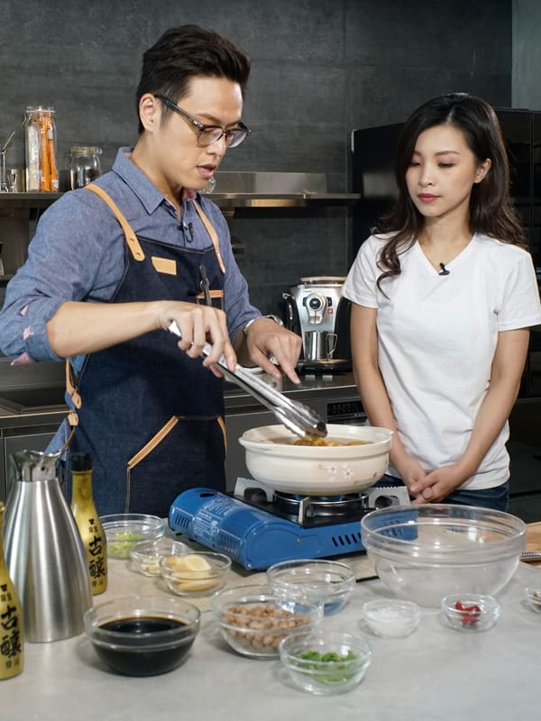
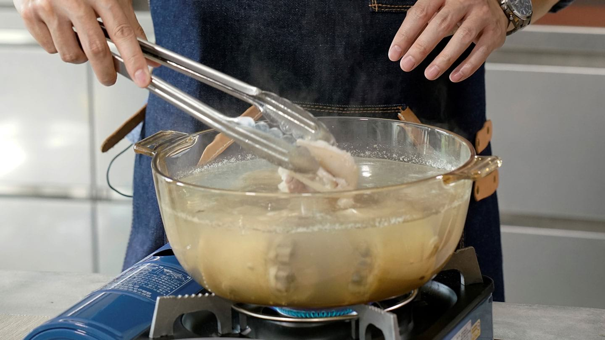
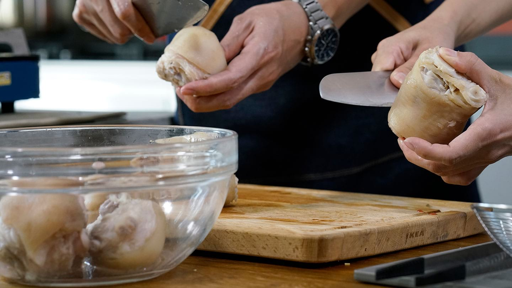
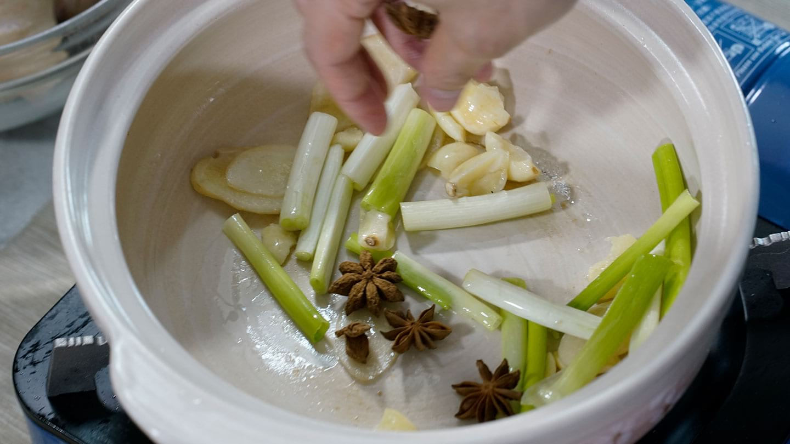
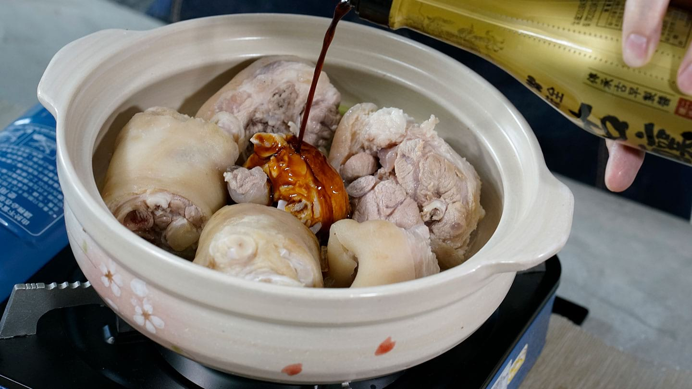
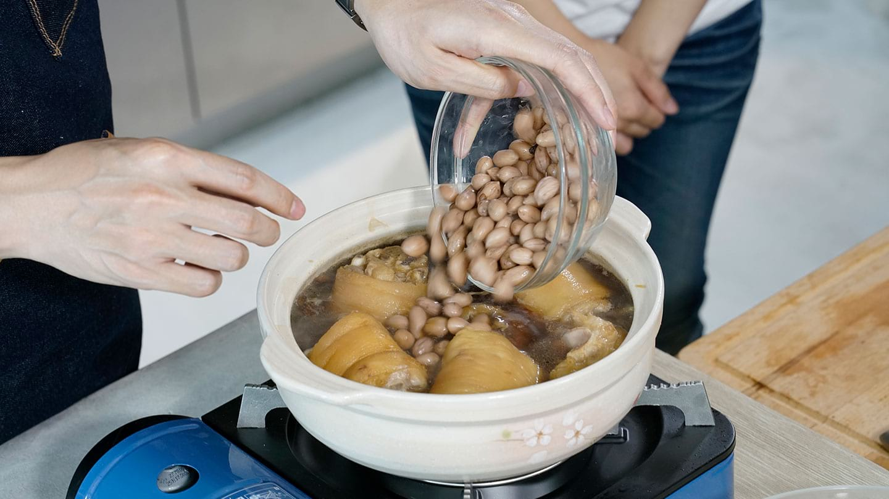

古釀暖心家宴
花生滷豬腳
暖心料理用愛烹調
Colin 老師表示，「花生滷豬腳」是否能色、香、味俱全，其重要關鍵就是一瓶對的醬油。」想要料理出道地古早味，當然要選擇遵從古法 270 天釀造的「古釀醬油，藉由它完美協調黑豆甘甜與黃豆醬香，讓豬腳有漂亮醬色及醇厚、鮮美好滋味。

花生滷豬腳
材料
-
豬腳2隻
-
花生300克
-
蔥2枝
-
薑片6片
-
蒜頭4瓣
-
八角6顆
-
水1500ml
-
味全古釀醬油450ml
-
冰糖5大匙
-
米酒150ml
-
香菜少許
作法
Step 1
首先將豬腳用滾水川燙。

Step 2
接著用清水洗淨，並將表皮髒污刮除乾淨後備用。

Step 3
接著在鍋中放入少許油，將八角、蔥、薑、蒜下鍋爆香。

Step 4
將豬腳及調味品放入鍋中。
Tips
挑選上色性佳的古釀醬油，不僅能讓豬腳有漂亮醬色，在滷製的過程中，醬油的黑豆與黃豆醬香，讓滷豬腳更加豐富醇厚。

Step 5
最後加水大火煮滾，放入花生，蓋上鍋蓋悶煮至軟爛即可。
